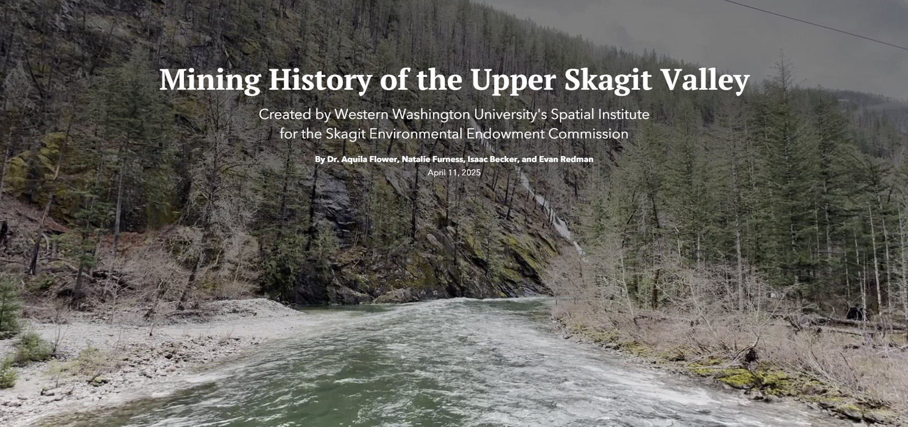

Partnered with the Skagit Environmental Endowment Commission, myself and two students compiled historical mining data in the Upper Skagit Valley to create an accessible data atlas.
This atlas serves multiple purposes. The first is to create an easy-to-use and accessible place to access, visualize, and download data related to historical mining operations in this area. This includes variables like soil, geology, and watersheds. Second, this atlas allows for interactive, clear communication about historical mining and why SEEC is interested in understanding more about it.
This atlas was created in ArcGIS Online and ESRI StoryMaps.
View the StoryMap Skagit Environmental Endowment Commission